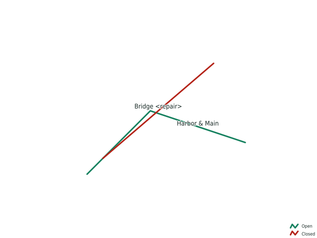

This plain HTML client discovers and requests an authenticated CRS84/SVG map without loading the OpenGeo application. A cache miss is asynchronous; a bounded completed output is returned directly, while larger output remains available through an exact signed version.
Ready. No request has been sent.
